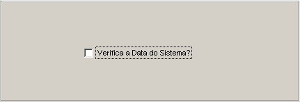

Parâmetros do Sistema
Previous
Top
Next
Finalidade :
-
Verificar a data do sistema.
Síntese :
-
Para a conciliação de todas as atividades automatizadas no programa horus o usuário pode optar para que verifique a data do sistema.
Pré-Requisitos :
-
Calendário
Pós-Requisitos :
-
Telas:
-
Botões
Descrição dos Campos

Verifica a data do sistema?
Informe se é para o programa executar essa função.